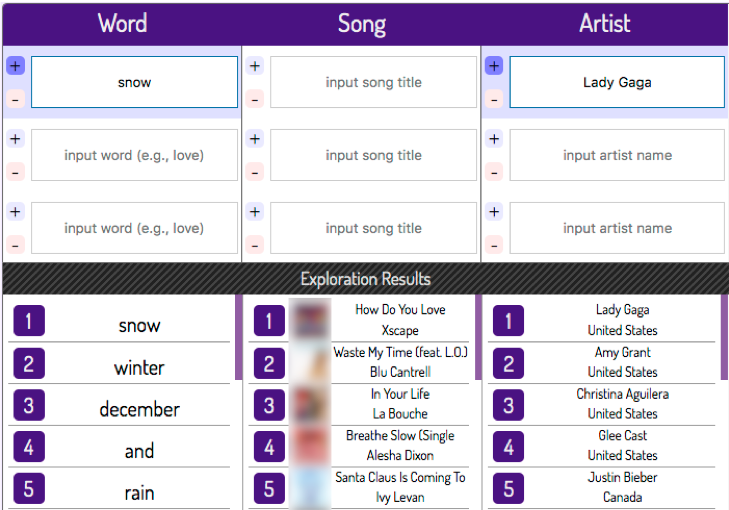

The left part of Figure 2. Query-by-Blending enables the exploration of three musical aspects: lyric word, song audio, and artist.
Audio Examples
Wake Up
Baby Won't You Please Come Home
Somewhere over the Rainbow
Angel Band
Familiar Love
The right part of Figure 2. Query-by-Blending enables the exploration of three musical aspects: lyric word, song audio, and artist.
Audio Examples
Satellites
Baby Baby
You'll Never Find (A Better Woman)
Come Crashing
In Your Life

Figure 3. By blending multiple flavors, Query-by-Blending can display music content similar to the blended flavor. The blended flavor "snow + Lady GaGa" is similar to Christmas, Pop, and Soul songs/artists.
Audio Examples
How Do You Love Someone?
Waste My Time (feat. L.O.)
In Your Life
Breathe Slow (Single Version)
Santa Claus Is Coming To Town
Figure 4. Query-by-Blending allows the user to subtract flavors from others. The flavor "Lady GaGa - Countdown (Pop song)" is similar to Alternative and Rock songs/artists.
Audio Examples
Input Audio
Countdown
Output Audio
Letterbox
Some Are Born
I Want Your Love (2Xs Radio)
Aisy Waisy
Free (Interface Mix)
Input word/song/artist flavor
Similar artists
Similar songs
Similar words
word: death
blood
dead
flesh
reborn
mortal
Burning Sermon
Neuro Osmosis
Scraping the Barrel
Coins Upon the Eyes
The Harlot Ov the Saints
Gary Numan
L'Âme Immortelle
Cowboy Junkies
Don Moen
Savatage
0.70
0.65
0.65
0.63
0.62
0.49
0.48
0.48
0.47
0.47
0.40
0.39
0.38
0.38
0.37
song: Amazing Grace
may
sadly
gentle
meadow
lullaby
I Wish I Was In England
North Country Maid
Mary, Did You Know
No Turning Back
Beloved
Barbra Streisand
Ella Fitzgerald
Linda Ronstadt
Debby Boone
Nana Mouskouri
0.37
0.35
0.34
0.34
0.34
0.85
0.84
0.83
0.83
0.83
0.40
0.39
0.38
0.37
0.35
artist: Michael Jackson
hypnotized
maurice
babygirl
confused
emotions
It's a Man's Man's Man's World
Tight
Play with Bootsy (feat. Kelli Ali)
Unspeakable
Dead Heat
Janet Jackson
Sarah Connor
Luther Vandross
Kylie Minogue
Faith Evans
0.41
0.40
0.39
0.39
0.39
0.50
0.49
0.48
0.48
0.48
0.61
0.52
0.52
0.52
0.51